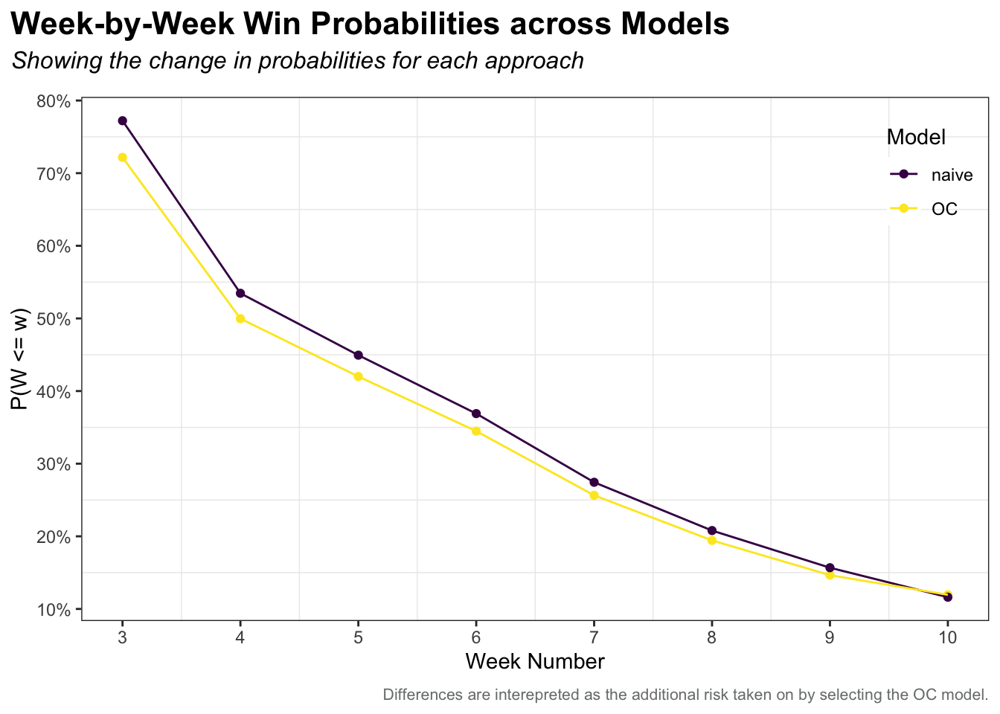

NFL Losers Pool - 2022
Coming out of of Labour Day weekend only means one thing, it is time again for the annual NFL Losers Pool competition. This is the second time I am writing about this type of competition. You can see my blog post about trying to draft an optimal lineup here: 2021 NFL Losers Pool.
Below are the rules for our 2022 contest.
Losers Pool Rules
- You must pick exactly one team per week to lose their game.
- You cannot pick the same team more than once per season.
- If your team wins their game, you are eliminated.
- Rebuys back into the competition are allowed for Weeks 1 and 2.
- You may enter up to three sets of picks.
Pick Optimization
The objective of this competition is to outlast the other competitors in the pool. Specifically, this means avoiding elimination and being the remaining player in the pool. The second point is worth noting because we will shift our strategy from simply minimizing the risk of our picks losing, to maximizing the likelihood that our picks move on relative to the picks of others in the pool. A quick foreshadowing - this will involve using team ownership to trade-off probability of making it to the next week for increasing our expected value in the competition.
There are a total of 32 teams to choose from, and we can expect the pool to run for roughly 10 weeks - going off of last years competition. This is a large number of potential combinations of teams to select in each week. In fact for 10 weeks, it is \(32 \times 31 \times ... \times 22\) which is roughly 234 trillion combinations (I’m not including teams with bye weeks but you get the idea, the space of possible picks is very large).
Fortunately, we can be smart about our optimization, and conditional on game forecasts, reach the global optimum without much computation work. I use two different algorithms to compare pick schedules; what I call the Opportunity Cost Model and Greedy Model. The Greedy Model will out preform the Opportunity Cost model in the short run, but eventually the Opportunity Cost model will pass the Greedy Model in future weeks.
Opportunity Cost Model - picking the lowest win probability team in a given week conditional on it having the largest distance to the second lowest win probability that same week.
Greedy Model - Picking the team with the lowest win probability in the first week, then the second, and so on…
Opportunity Cost Model Algorithm
- Step 1: Compute the difference between the least and second least likely teams to win in each week for each team and week in the pool.
- Step 2: Pick the team & week combination with the largest difference between the least and second least likely teams.
- Step 3: Remove the week and team combination from the pool and repeat Steps 1 & 2 until all weeks are filled.

Greedy Model Algorithm
- Step 1: Start at the earliest week we wish to optimize over.
- Step 2: Pick the team with the lowest probability of winning, and remove this team from the candidate pool.
- Step 3: Move on to the next week, and repeat Steps 2 and 3 until we reach the terminal week.

Making Picks
Lets put the above algorithms to action. Like last year, I am using the FiveThirtyEight NFL Projections to estimate each teams likelihood of winning their game. These ratings are based off of each teams computed ELO score, with some additional adjustments - read about their methodology here.
We can see that there are some clear weeks below with drastic underdogs, and each week after Week 1 contains at least one game with a win probability less than 25%.

I choose to run the above two algorithms starting in Week 3. Since we can rebuy back into the competition in Weeks 1 and 2, we do not want to take a valuable pick from our elimination weeks. Therefore, I make my set of picks on weeks 3 through 10, then pick Week 1 and 2 after removing the Weeks 3 - 10 picks, this ended up being the Pittsburgh Steelers and Chicago Bears.
The pick schedules using both algorithms are shown below. Notice the trade off of early week win probabilities for later risk savings.

We can compare the performance of both algorithms by comparing the likelihoods of reaching a given week for both models. The likelihood we move on from a given week \(w\) is equal to the probability \(P(W\leq w)\) where,
\[\begin{align*} P(W\leq w) &= \Pi_{w=3}^{10} p_{i, w}\cdot x_{i, w} \\ \text{Subject to } & \sum_i x_{i, w} = 1 \\ & \sum_w x_{i, w} \leq 1 \end{align*}\]
Which is the likelihood a given schedule of picks reaches week 10 subject to being able to pick only one team per week, and picking any given team at most once.

Team Ownership
Since we know who has already been selected, we can attempt to model the decision process by our competitors. Teams that have been picked by many people are advantageous to select, as we know others will not also be able to pick these teams. This means we can remove ourselves from the clusters of picks, and avoid any upsets that lead to mass eliminations.
The below chart shows the win probabilities per team along with the share of players in the competition who have already selected that team. As the weeks progress, we will use this information to further influence our picks. Interestingly, roughly 30% of players have already picked Atlanta, the overwhelmingly safe pick in week 5. This is indicative that competitors are not looking ahead when determining their current week picks.

Results
Below are the results through Week 2. We had 11 eliminations all re-buying in Week 1, and 4 eliminations in Week 2 with everyone who was eliminated re-buying into the competition. These early losses make for a healthy prize pool up for grabs.

The end of Week 2 concludes the re-buy period. From now on we will be relying on the OC algorithm for our picks, on to Week 3!